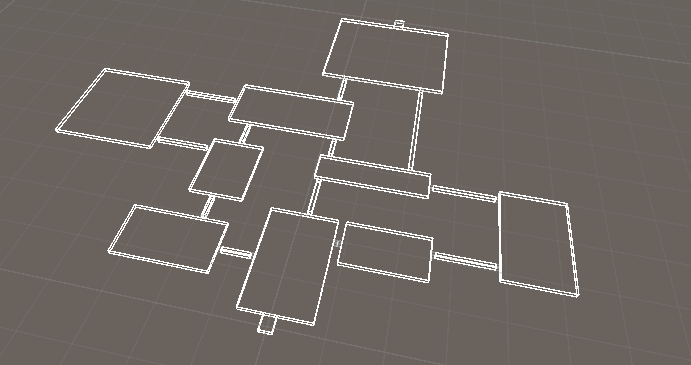
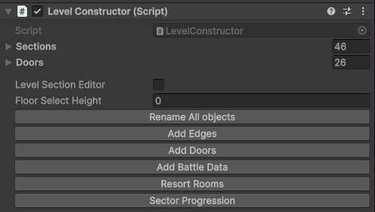
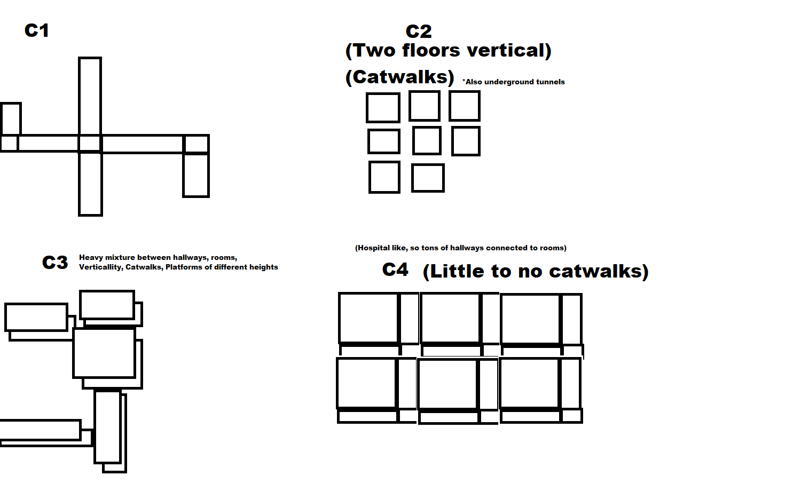
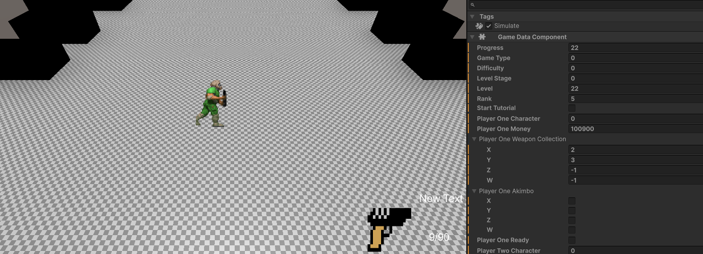
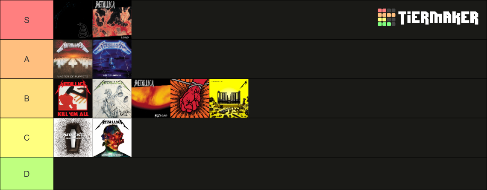

Tools and Metal

I've gotten alot done. In the first month, though it's hard to find what when there's a week between data. Maybe I need to have a note of thing's I got done. Anyway I know I got AI done, Reworked the health and damage, enemies can attack you, can be killed and drop money. Buyable Ammo, Guns. Guns where especially a pain sense they work completely differently then a venting machine. But either way, i got them done and I begin work on tools for making levels
Something I learn't on the old version of Pulverizer and Empire of dirt, Never half ass the process of level design. If you need a tool that could improve everything, add it. You'll lose more time from the numbness of tedious work then the time it takes to make a proper set of tools for level design. Don't ever rename individual sectors of levels. Create code to do it for you. Hell this is actually one of the good thing's AI is good for, simple little bits of tools that automates small simple tasks in high volume. I took use of that and added buttons for thing's like renaming, adding edges. I also improved the existing code by adding a preview to placing sectors. Sense levels are generated on startup, I sorta treated levels as blueprints, I had alot of freedom. There are still limitation's, I need tools for multilevel support. But for now I just wanted the campaign finished

On the level design, I needed to get more references and learn different types of layout. First chapter being the layout similar to a sewer or WW2 underground factory like V2 Rockets. Concrete, metal, with long big hallways with corner sections. Chapter 2 was more squarish with small door ways, like the original pulverizer. Chapter 3 was similar with small bits of connected hallways and more verticality. Chapter 4 was hospital like so it was more Hallways connected to rooms, This kinda reveal the limits of the design a bit. Sense doors open per room, I had to get rid of the more creative levels layouts that had hallways locked off by doors. Instead replacing it with filler grid levels. Chapter 5 is just a repeat of theses

At one point i'd thought it be hopeless, that I could at the very least be stuck at chapter one. I had a bug that would break level authoring past the first level, fixing it also removed the gun machines but I'll finish that another time. But I persisted, fixing little issues and on the morning of April 23, I beat my own game

I rode my longboard and ate taco bell to celebrite. I had to leave for a bit out of state, so past that there wasn't too much work, Past the campaign I fixed a few bugs involving enemie spawning. shooting, etc. On Monday I added a save system, it was simple but it's something. Mechanic wise, for the basics I need to properly handle death, a pause menu. There are alot of graphical stuff like shadows, lighting blood, etc. I think next month i'll slowly add proper game mechanics like gun selection, which is the big one. More enemies, guns, etc. Have a actual fun game to play
In the timeframe of all this, I took on a quest to listen to every main Metallica album, all except Lulu, I listened to one song, burst out laughing, then turn it off. Bare in mind a few thing's about my ranking of albums, 1: I listen while I work, I don't have full concrentation of the album itself. Sometimes I notice more with repeated listen's, Some albums might be higher or lower later on with repeated listen's. Kill Em All was decent, I don't remember much through, gonna have to listen more. Ride the lightning was really good, I've always enjoy'd "Call of Ktulu", Creeping death was also good. Master of puppets is obviously a classic, but I didn't realize just how good "Disposable heroes" was. That song alone as seriously improved my picking technique, it's fast, the lyrics are crueling and punching. And justice for all, I listened to a remix version with bass. I personally have a hard time hearing bass, I really have to pay attention to notice it. The album itself is good with Harvester of Sorrow still being my personal favorite. Overall I think the album suffer's from a sorta sound design that plague'd later album's, especially Hardwired and Death Magnetic, I can only best describe it as flattish, almost generic. Like if you ask a AI to generate a metal song, it sometimes feel like a consequence of overproducing. Luckily the sound is offset by the song writting itself. The black album is still great, Sound design, song writing wise, Lyrics, Jame's riff. All really punchy. I'm honestly surprised enter sandman is main one for alot of people sense to me it's the weakest. Not bad at all, good to play after calling people gay online. But there are alot of better song's. "The god that failed" is incredible, Hard hitting riff, Harsh lyric's. Same with "Don't tread on me". I do like how metallica, as a band sorta have a progressive pacing to it's album with a sorta ballad like song between, and the occasional instrumental. "Unforgiven" is different in tone but as extremely good lyric's and atmosphere. It gives alot of needed pacing and diversity to their albums. Now...onto the "Cum, Piss and Trash" trilogy. Load is a favorite of mine, Bob rock is a good producer so naturally the sound design is fantastic, honestly on pair with the Black album in my opinion. Song writting detorated a bit but I quite like alot of it. Outlaw torn, the house jack built, Bleeding me, Ain't my bitch, Hero of the day, All great
Now. reload I didn't like when I listened to it, now I didn't mind it. Bad seed is a good song, The single's like king nothing is good. But as happens with later albums, it starts off great, then get's quite forgetable. St anger is one of them, I have alot of nostalgic for this album so I don't quite mind the aborted snare. In fact I quite like it. But outside the sound, it's not quite memorable. Invisible kid is my favorite, Frantic, st anger itself last a little too long, In fact all this will be a common theme with later album's. Death magnetic was another one I was nostalgia for and it doesn't quite old up. I listen to the non compressed guitar hero version, It starts off really strong and sorta deter's. All nightmare long is good, Judas kiss as some nice fast riff's. Opening song is strong and perfect as a opener. I do sorta notice something with jame's lyrics, it can feel kinda try hardy. You really don't need to try hard to make a punchy metal song, Creeping death is about moses and that song hit's hard. Alot of it comes to sound design, I dunno if it's the guitar hero version, but there are some weird bit's. like James vocals sounding almost auto tune at some point's. Alot of it just feels eh, it's also fucking long, like jesus, it really doesn't need to be One hour and ten minutes. Hardwired goes through the same issues, starts off strong, atlus wise, hardwired, all great song's. Sound design is alot better in alot of area's. But the album suffers from alot of tiny issues that by themself wouldn't be a problem, but combined can make it annoying, song's drag on, not just long, but very samey passing. James lyrics still feels quite try hard at point's. Outside of murder one and Atlus Rise, alot just feel generic metal sounding words. I was practically wishing for the album to be over. Because of this I had no hope for 72 season's. I wasn't interested when it came out, and I played it out of obligation. But I was pleasently surprised. The song's might be long but the album plays with the pacing enough where it doesn't feel boring. And what's this? Robert get's a fun baseline at the beginning? THERE'S A SONG THAT'S ONLY 3 MINUTES?. Overall fun album, but i'm worried my opinion is only as positive due to my negative experience with hardwired. Anyway, metallica talk over, Rip lars hawaiian shirt. I idenitify as a table
